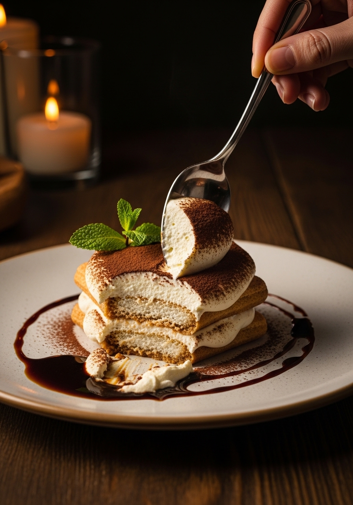

Dolci · Tradizione Italiana
Tiramisù
Tiramisù
della Nonna
Niente panna, niente scorciatoie. Solo mascarpone fresco, uova, caffè espresso vero e savoiardi. La ricetta che ogni nonna italiana porta con sé.
Niente panna, niente scorciatoie. Solo mascarpone fresco, uova, caffè espresso vero e savoiardi. La ricetta che ogni nonna italiana porta con sé.
Il tiramisù nasce negli anni '60-'70 nel Veneto. La ricetta originale è semplice nella sua logica: una crema ricca di mascarpone e uova montate che avvolge biscotti savoiardi imbevuti di caffè forte. Il contrasto tra la dolcezza della crema e l'amarezza del caffè è il genio di questo dolce. La versione con panna è una semplificazione moderna — meno intensa, priva della consistenza setosa che solo il mascarpone puro può dare.
Il mascarpone va incorporato a temperatura ambiente — non freddo di frigorifero, che formerebbe grumi. I tuorli devono essere montati a lungo con lo zucchero fino a diventare chiari e quasi bianchi. Gli albumi vanno a neve ferma e incorporati in 3 riprese con movimenti delicatissimi dal basso verso l'alto — è il momento più critico della ricetta.
Per 8 persone · 30 min + 4 ore di riposo

La ricetta tradizionale prevede uova crude. Se hai preoccupazioni usa uova pastorizzate, oppure pastorizza i tuorli a bagnomaria con lo zucchero fino a 82°C.
Il minimo sono 4 ore in frigorifero, ma l'ideale è prepararlo la sera prima. Il riposo permette ai savoiardi di ammorbidirsi e alla crema di compattarsi.
Assolutamente sì. Il Marsala è facoltativo. Puoi usare rum, Kahlúa o caffè liquore, oppure ometterlo del tutto per una versione analcolica.
Il tiramisù classico usa solo mascarpone, uova e zucchero. La panna non è nella ricetta originale. La versione classica è più ricca, setosa e autentica.
In frigorifero per 3-4 giorni coperto con pellicola. Non si congela bene: la crema al mascarpone cambia texture e i savoiardi diventano gommosi.